上世纪70、80年代，摇滚音乐在全球掀起热潮。
前卫摇滚、艺术摇滚、古典摇滚、朋克摇滚、英伦摇滚、重金属此起彼伏。
在这样的背景下，香港出现了第一批乐队热潮。
Loosers（温拿乐队前身）、Lotus（主音为许冠杰）、罗文四步合唱团（主音为罗文）、新特乐乐队（主音为叶振棠、陈洁灵）、Visa Band（主音夏韶声）、玉石乐队（林子祥客串主音）.....纷纷诞生。
但这些乐队主要以翻唱和英文歌曲为主，香港并未出现原创能力极强的本土乐队。
在这样的时代背景下，当时成长起来的年轻人，受西方摇滚非常深。
其中，有两个人喜欢上了同一个摇歌手大卫.鲍伊。
一个名叫叶世荣，他中学开始痴迷摇滚，便开始学习打鼓。
另一人便是黄家驹，他正在家中抱着邻居搬家时丢下的一把吉他日夜苦练。
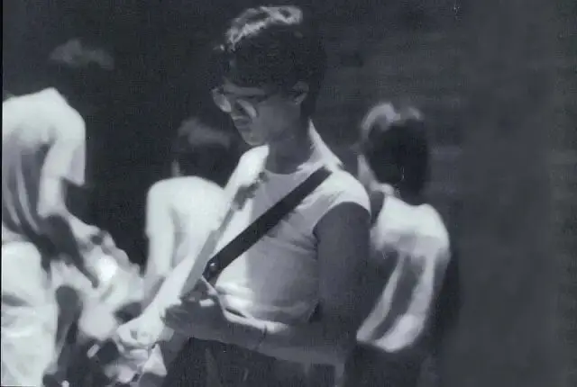
80年代初，两人通过琴行老板相识，当得知对方都喜欢大卫.鲍伊时，两人兴奋不已，从此结为知己，互相交流音乐。
当时，两人初出社会，喜欢音乐但又不能当饭吃，所以叶世荣在德高保险有限公司做保险经纪。
而黄家驹，则在工厂、货仓、皮革厂类里四处奔波，后来经叶世荣介绍，也干了一阵子保险经纪的工作。
就这样，两人白天上班，晚上玩音乐。
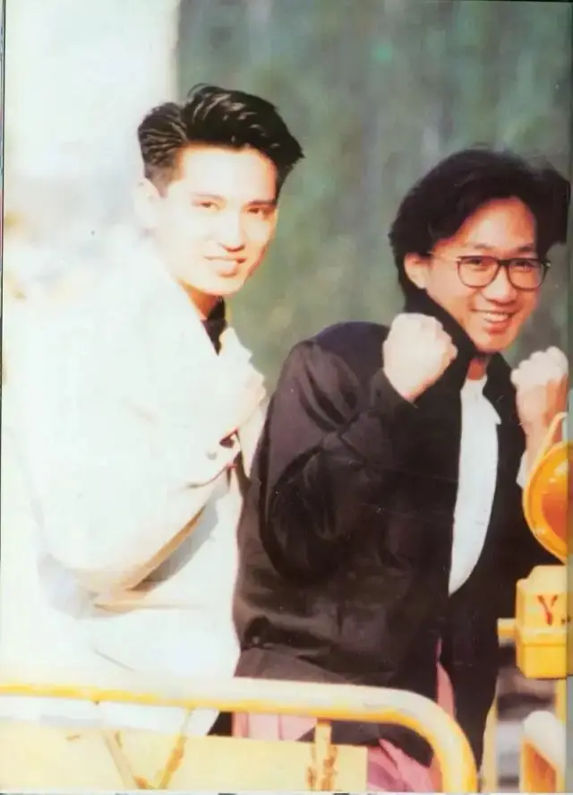
后来，为了练琴方便，叶世荣打着结婚准备房子的名义从父母那里“骗来”了一套小房子。
房子到手后，他们便立刻将其改为琴房，名叫“二楼后座”。
二楼后座慢慢集聚了一帮爱好音乐的人，他们互相启发和督促，也彼此配搭了不少野乐队。
当时，他们主要是模仿西方摇滚的一些技法，翻练别人的摇滚乐曲。
随着大家的技术臻于至善，他们渐渐不满足于演奏别人的歌，其中一个叫做邓炜谦的吉他手提出：练别人的曲子，像被别人牵着鼻子走。要想有所成绩，应该有自己的作品，乐队在练好技术的同时，应该多在创作上下一些功夫。
这个理念获得了大家的一致认同，渐渐地，追求原创成为了这帮摇滚爱好者的追求，他们开始尝试曲子编排和原创曲目的创作。
渐渐地，他们拥有了自己的原创作品。
1983年，吉他杂志举办吉他大赛，一伙人报名，想要试试身手。
当时，吉他手邓炜谦、黄家驹、贝斯手李荣潮、鼓手叶世荣等人报名参赛。
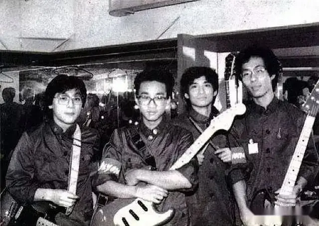
报名时，乐队还没有队名，邓炜谦提出叫做beyond，希望能够超越其他乐队、超越自己。
当时beyond演奏了两首原创纯摇滚音乐《脑部侵蚀》和《大厦》，风格前卫，一举获得冠军。
这给黄家驹等人带来了极大的信心和鼓舞。
也许，他们将来可以靠音乐吃饭。
而对于一些真正的爱好者来说，他们往往会将自己的兴趣放置在人生的高处，经常是远观而不敢亵玩。
他们对于将兴趣变成自己的事业会存在纠结和恐惧，担心生活的无奈以及难以自控的利欲熏心玷污了这份纯洁的兴趣。
因此，这群音乐爱好者，对于自己未来的音乐梦想，心底了是有着相当复杂的情绪。
既渴望又害怕，看上去很激情却很迷茫，经常看不清楚方向，但又凭着信心一直坚持往下走。
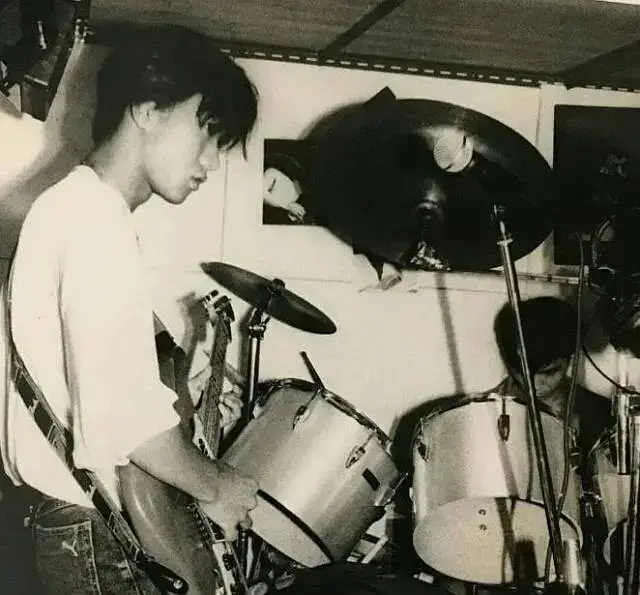
吉他大赛之后，黄家驹等人想要将beyond打响，想要创作更多的原创作品。
当你打算孤注一掷的时候，并非所有人可以跟着你全情投入。
当时颇有才华的邓炜谦，家人并不支持他走音乐路线，再加上工作和生活上的繁忙，邓炜谦最终退出了乐队，李荣潮也因为各种原因离开了乐队。
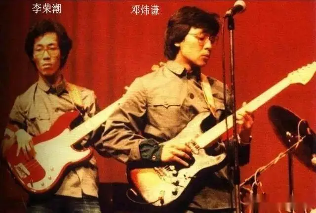
beyond还未出发，便失去了主吉他手和贝斯手。
之后，黄家驹将弟弟黄家强拉过来当贝斯手，叶世荣则把自己的一个好友关宝璇拉来做吉他手。
关宝璇做了不到半年便离开，之后陈时安加入beyond成为主音吉他。
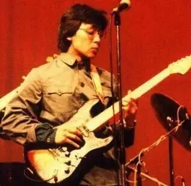
陈时安虽然在beyond的时间也不长，但是他技术精湛、英语水平也非常高，在陈时安的启发下，黄家驹的创作再次走上新的台阶。
在那段时间里，他们创作了英伦风格的《Long Way Without Friends》、《Last Man Who Knows You》、《Myth》、《The Other Door》的英文作品，以及迷幻摇滚风格的《dead romance》等作品。
这些作品放在今天，听起来都非常前卫。
一边为生活奔波，一边创作自己喜欢的音乐，那段时间很忙碌，也很纯粹，很开心。
这段创作的时光是黄家驹心底里非常珍贵的经历和记忆。
所以，后来陈时安因为去美国求学离开乐队后，黄家驹经常提及这位故友，每次提及都非常伤感。
陈时安离开后，黄贯中便加入beyond担任主音吉他，自此为大众所熟悉的四人阵容诞生。
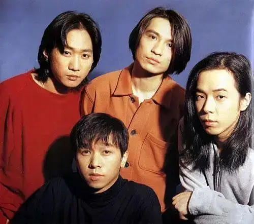
1985年，beyond已经拥有十几首成熟的原创作品，他们的才华开始引起资本的注意。
这个时期，可能是beyond最纠结的时候。
要靠音乐吃饭，就要迎合当时香港音乐市场的口味和需要。
要继续做音乐，就必须要从地下乐队冲到地上。
一边是自己喜欢的前卫摇滚，一边是当时市场没有棱角和态度的大众口味。
这个转变，beyond需要牺牲掉棱角，在风格和题材上也需要妥协而变得更加大众。
自己可以转变成功么？转变后是自己渴望的音乐梦想么？
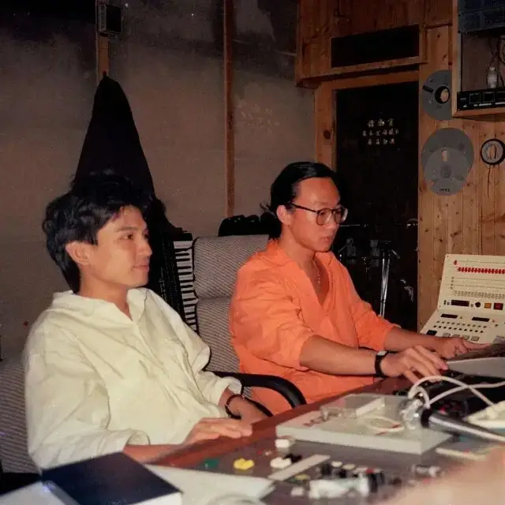
这些纠结、苦涩、坚持和舍弃都盘踞在beyond的心头。
就是在这样的情况下，黄家驹创作出了beyond乐队真正意义上的第一首怨曲。
这首歌便是《再见理想》，这首歌描述了一个这样的场景：
在低鸣的电吉他声下，一个落寞的吉他手，独坐在路边街头。
一阵冷风吹来，吉他手心里寒意四起，苦涩的情绪一阵袭来。
曾经为了梦想一直坚持到现在，这一路走来，与众人渐行渐远，彼此铸就难以逾越的隔阂。
逆流而上，以为会追逐到梦想，但实则充满了幻灭和空虚。
更加孤独的是，曾经一同奔跑的好友也已经远去，只留下自己独坐在冷风中。
想到这些，吉他手心中苦涩不已，只能抱紧手中的吉他。
很多人不明白beyond为什么会如此重视这首歌，也不理解几个阳光小伙子组成的乐队的起点歌曲为什么会如此悲凉。
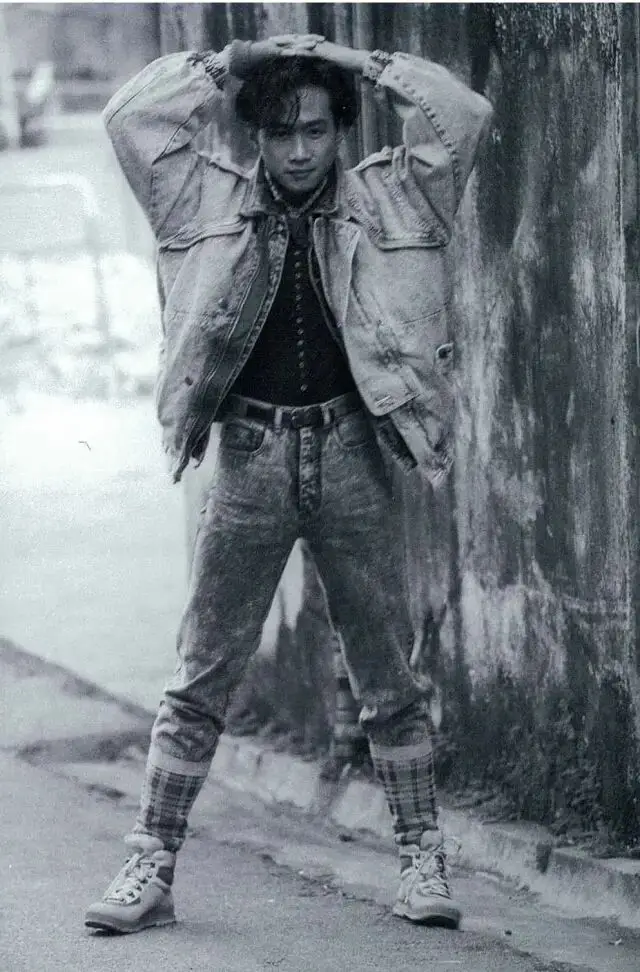
但是有了前面的铺垫，我想大家更能明白这首歌的内涵和对beyond的意义。
这首歌是对过去6年的总结，非常真诚地表达出beyond一路走来的复杂情绪。
音乐是非常感性的艺术，这首歌会让我们立马想到远去的邓炜谦的和陈时安。
会让我们体会到beyond在面临人生选择、面对音乐事业转型中的纠结和孤独。
能感受到beyond一路坚持的疲惫，更能体会到beyond“孤走我路”的勇气和决心。
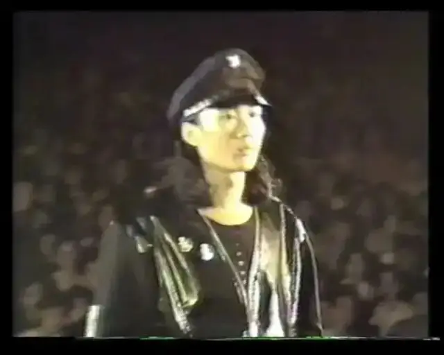
这首歌奠定了beyond独特的怨曲风格：
一路坚持的孤独、不得已做出妥协的唏嘘、梦想看似得到却是遥远的疲倦、失去的爱情和好友、依旧选择继续走下去的决心。
低沉、真挚、悲伤却异常充满力量。
这是让我非常欣赏beyond怨曲的原因。
《再见理想》之后的《午夜怨曲》、《灰色轨迹》、《谁伴我闯荡》、《海阔天空》等均是饱含以上情感元素的作品。
黄家驹能写的出《再见理想》，我们也就可以理解黄家驹为什么选择远走日本，就像《 灰色轨迹 》的那句：冲不破墙壁，前路无法看的清。
在beyond在只有娱乐圈的香港无法坚持初心的时候，即使beyond已经取得商业化的成功，黄家驹作为乐队的灵魂，依旧决定带领乐队转身冲向充满未知的日本。
这便是beyond带给我最大的震撼。
不论beyond后面取得过什么样的成就，获得多少奖项，举办了多么大的演唱会，beyond的怨曲创作从未停止。
因为beyond始终未忘记曾经的梦想，beyond一直在纠结，一直在对抗，beyond要超越的始终是自己。
这是真正的摇滚精神，不妥协，不利欲熏心，始终以飞蛾扑火般的激情去探索。
这也是黄家驹创作能力的深层原因。
从黄家驹从琴房与叶世荣交流音乐，到与陈时安一同创作《myth》，再到日本与日本音乐家喜多郎一同创作《长城》，最后与韩裔编曲大家梁邦彦一同创创作《海阔天空》.....
创意始于天赋，源于兴趣，在分享和交流中发展壮大，更因为梦想和坚持而燃烧。
在这一点上，beyond是一只被大众所低估和忽视的宝藏乐队。
他们的成长和作品完整地刻画出群体创作的生命体态，如果我们细细凝视这种体态，我们自然并将最宝贵的注意力给到原创，而非被流水线包装出来的小鲜肉吸引。
28年前的今天，家驹梦碎富士山，谨以此文纪念家驹。
希望六百击和六百击的朋友们，在生活和工作的夹缝中有所坚持。
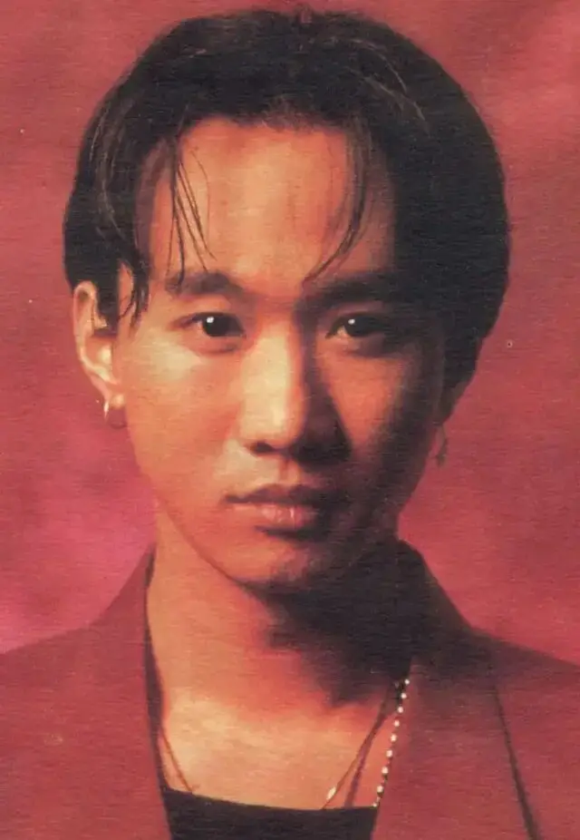

滑动下方区域
查看完整歌词
▼
独坐在路边街角 冷风吹醒默默地伴着我的孤影只想将结他紧抱 诉出辛酸心中一股冲劲勇闯抛开那现实没有顾虑彷佛身边拥有一切看似与别人筑起隔膜几许将烈酒斟满那空杯中借着那酒洗去悲伤旧日的知心好友何日再会但愿共聚互诉往事心中一股冲劲勇闯抛开那现实没有顾虑彷佛身边拥有一切看似与别人筑起隔膜心中一股冲劲勇闯抛开那现实没有顾虑彷佛身边拥有一切看似与别人筑起隔膜一起高呼Rock n' Roll...一起高呼Rock n' Roll...一起高呼Rock n' Roll...一起高呼Rock n' Roll...一起高呼Rock n' Roll...
-END-
推荐阅读
▼
（点击文字即可获取全文）
27年前，戛然而止的吉他，永不凋零的生命！
为音乐尊严而战，他们是严重被低估的乐队！
这里没有挑逗你眼目情欲的小鲜肉
也没有挑动你肉体情欲的段子
更没有膨胀你今生骄傲的鸡血
我们只在乎那些最质朴真诚的作品
在那里我们才能恢复真正的想象力
我们也坚信这才是我们真正需要的

ID:Six_hundred_hits
长按二维码，一键关注
【六百击】
电影评论
尽情分享朋友圈